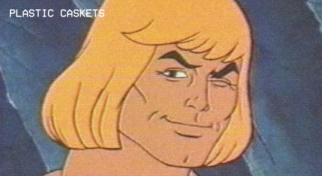
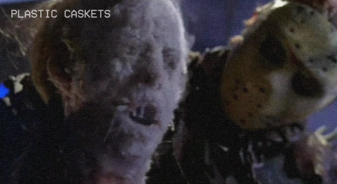

Aug 25, 2016

Walking along a toy vendors table at your favorite dirt mall, you always recognize them at first glance. The frame of the figure gives it away. The body resembles a collection of stones bound together in the shape of a human form more than a realistic depiction. The pronounce bowleggedness, that only worsens with time, is so nicely accentuated by that tiny ballerina waist. You read the f--king title. I am, of course, talkin bout MOTHERF--KIN MASTERS OF THE UNIVERSE.
Read More...
toys
Aug 24, 2016

"Hey, you know about comics", the conversation always starts. Just like that, somebody thinks they are on an episode of f--king Antiques Roadshow. "I got something you should look at". Soon, I am staring down at some dank, musky-smelling long box. There is some schmuck hovering overhead and grinning at me like I am about to reveal they won the godd--n lottery. First, let us take a few steps back and talk about a little history and capitalism. Let’s talk about why your 90s collection of comics is worth JACK S--T!
Read More...
comics
Aug 23, 2016

You have seen them at horror conventions. The folks who still collect VHS. You have shaken your head and likened them to hipsters. These reactions are understandable and, given the person, not too off base. "Why would anyone pay such high prices for a dead media", I hear you muttering. Are you ready for the big reveal you AbsoF--kingLoutely saw coming? I am a tape head. Now, I do not want to bring you into the circle. Qualities are limited and that would be foolish of me. What I would like to do though, is tell you why it is enjoyable. I am going to tell you why you should be a TAPE HEAD SYMPATHIZER.
Read More...
movies